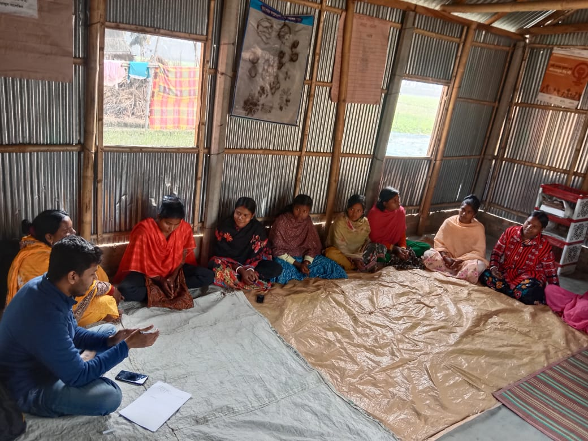

About

Bangladesh Open Innovation Lab (BOIL) is supporting HEKS/EPER in implementing an employer mapping project to address the gaps between youth employability and labor market needs. The project focuses on identifying employment trends, skill gaps, and workforce requirements to enhance economic opportunities for young people, particularly marginalized groups such as plain land Adibashi Dalits and other marginalized communities.
HEKS/EPER’s initiative aims to address the pressing challenges faced by youths from marginalized communities in Bangladesh, especially in the Rangpur and Rajshahi divisions, who are often deprived of education and employment opportunities due to systemic barriers, economic constraints, and a lack of technical skills. This project seeks to identify and map both formal and informal employment opportunities to enable these youths, particularly those participating in the program, to access meaningful livelihood options.
This mapping exercise will lay the foundation for designing targeted TVET (technical and vocational education and training) courses tailored to the specific needs of the job market and the aspirations of the youth.